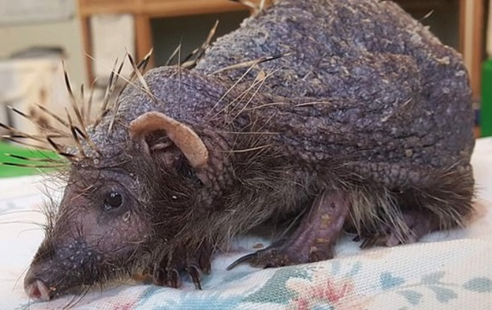

О собаках
Соба́ка (лат. Canis lupus familiaris) — домашнее животное, одно из наиболее популярных (наряду с кошкой) животных-компаньонов.
Первоначально домашняя собака была выделена в отдельный биологический вид (лат. Canis familiaris) Линнеем в 1758 году, в 1993 году реклассифицирована Смитсоновским институтом и Американской ассоциацией териологов в подвид волка (Canis lupus).
Длительность жизни питомцев
Эмпирически, длительность жизни млекопитающих увеличивается с увеличением размера мозга (в результате, она также увеличивается с увеличением массы тела) и уменьшается с увеличением скорости метаболизма. Типичная зависимость нарушается в случае пород собак. Большие по размеру породы собак, хотя и достигают половой зрелости медленнее, живут значительно меньше, разница может быть двукратной между наибольшими и наименьшими породами.
В книгу рекордов Гинесса как «самая старая собака» в мире (29 лет и 5 месяцев) вошла австралийская пастушья собака по кличке Блу. Она пасла крупный рогатый скот и овец на протяжении почти 20 лет.

Ветеринарные лечебницы
Ветеринарная клиника — лечебно-профилактическое учреждение для оказания ветеринарной помощи больным животным на приеме в специализированном учреждении, либо на дому. Различают государственные и частные ветеринарные клиники.
Большинство ветеринарных клиник проводит оказание следующих услуг: терапия, хирургия, вакцинация, чипирование, забор анализов и лабораторная диагностика, ультразвуковое исследование, рентгенология, кардиология, стоматология, эндоскопия, офтальмология, эвтаназия.
Собака в обществе
C давних времён по сей день собаки выполняют широкий спектр функций в деятельности человека: от охраны объектов до научных экспедиций, однако по мере развития технологий, культуры, в связи с урбанизацией общества роль собаки значительно изменилась.
В викторианской Англии собака стала символом статуса, начался интенсивный искусственный отбор собак по морфологическим признакам. В результате разнообразие оказалось настолько огромным, что стала необходимой классификация физической формы пород и кодификации. К концу XIX века появились британские и американские клубы собаководства. Старейшим в мире является английский Кеннел-клуб.